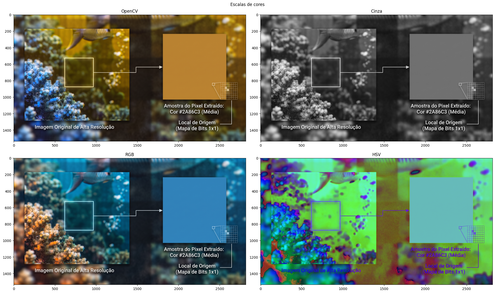
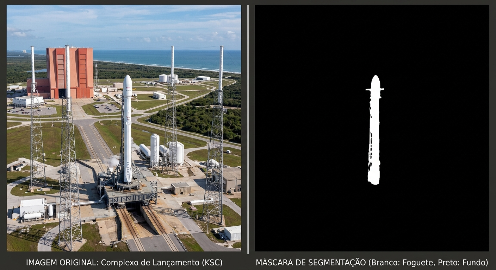

Fundamentos de imagens digitais
Fundamentos de Imagens Digitais
🛠️ Ferramentas Utilizadas
📖 1. O que é uma Imagem Digital?
Toda imagem digital é composta por pixels (picture elements), a menor unidade de representação visual computacional. Na prática, uma imagem é representada na memória como uma matriz (ou tensor) de valores numéricos, em que cada posição guarda a intensidade luminosa ou de cor daquele ponto.

Para manipular imagens via código, precisamos compreender quatro conceitos fundamentais: resolução, canais e escalas de cores, filtros e máscaras.
📐 Resolução
Consiste nas dimensões espaciais da imagem (\(\text{altura} \times \text{largura}\)), representando a quantidade total de pixels organizados na matriz.
Maior resolução → Maior quantidade de pixels → Maior nível de detalhes visuais.- Exemplo prático: Uma imagem Full HD (\(1920 \times 1080\text{ pixels} \approx 2{,}07\text{ Mpixels}\)) versus uma Ultra HD 4K (\(3840 \times 2160\text{ pixels} \approx 8{,}29\text{ Mpixels}\)). Qual delas preserva mais detalhes ao darmos zoom?
🎨 2. Canais e Escalas de Cores
Os canais representam a quantidade de camadas que compõem a matriz da imagem. Eles armazenam propriedades como cor, luminosidade e transparência em cada pixel. Em imagens padrão de 8 bits por canal (uint8), cada valor varia de 0 (ausência de intensidade) a 255 (intensidade máxima).
A forma como esses canais são combinados define a escala (ou espaço) de cores:
- Canais: R (Red), G (Green), B (Blue)
- Descrição / Aplicação: Padrão em telas, monitores e fotografia digital.
- Atenção no OpenCV: Por razões históricas, o OpenCV lê imagens no formato BGR (Azul, Verde, Vermelho). Para exibir as cores corretas no
matplotlib, convertemos de BGR para RGB.
- Canais: H (Hue / Matiz), S (Saturation / Saturação), V/B (Value / Brightness / Brilho)
- Descrição / Aplicação: Separa a cor pura (Matiz) da vivacidade (Saturação) e da iluminação (Valor). Essencial em editores de imagem para alterar a saturação sem distorcer as cores originais.
- Canais: L (Luminance / Intensidade)
- Descrição / Aplicação: Canal único (matriz 2D). Muito utilizado em fotografia P&B, detecção de bordas e pré-processamento leve.
- Canais: C (Cyan), M (Magenta), Y (Yellow), K (Black)
- Descrição / Aplicação: Modelo subtrativo voltado para impressão gráfica e editorial.
- Canais: H (Hue), S (Saturation), L (Lightness)
- Descrição / Aplicação: Desenvolvimento web (CSS) e design de interfaces (UI/UX).
- Canais: L (Lightness), a (eixo Verde-Vermelho), b (eixo Azul-Amarelo)
- Descrição / Aplicação: Gerenciamento profissional de cor e aproximação da percepção visual humana.
- Canais: Canais base + A (Alpha)
- Descrição / Aplicação: Extensão que adiciona um quarto canal para controle de opacidade/transparência.
- Canais: Y (Luma), U/Cb (Chroma Azul), V/Cr (Chroma Vermelho)
- Descrição / Aplicação: Separa a luminosidade da crominância. Usado em transmissão de vídeo e compressão JPEG.

Observação: Maior quantidade de canais → Maior volume de informação por pixel → Maior consumo de memória e processamento.
🎛️ 3. Filtros, Ajustes e Máscaras
Em processamento de imagens, filtros são operações matemáticas aplicadas sobre os pixels para modificar a aparência da imagem — seja ajustando cores e iluminação, suavizando ruídos ou destacando contornos.
Operações ponto a ponto que alteram o brilho, o contraste e a vivacidade das cores:
- Brilho e Contraste: Transformação linear dada por \(g(x,y) = \alpha \cdot f(x,y) + \beta\), onde \(\alpha\) (alpha) controla o contraste (amplitude entre claros e escuros) e \(\beta\) (beta) soma ou subtrai brilho.
- Matiz / Saturação (HSV Shift): Altera a roda de cores (Matiz) ou a intensidade/pureza das cores (Saturação).
- Equalização de Histograma: Redistribui as intensidades dos pixels para maximizar o contraste global.
- Ajuste de Gamma (Correção Gamma): Mapeia a luminância de forma não linear (\(g(x,y) = f(x,y)^{\gamma}\)) para corrigir exposição.
Modificam o valor de cada pixel calculando uma combinação dos seus pixels vizinhos (convolução):
- Borramento por Média (Box Blur): Substitui o valor do pixel pela média simples dos vizinhos, provocando um borramento uniforme.
- Suavização Gaussiana (Gaussian Blur): Aplica uma matriz de pesos baseada na distribuição gaussiana para suavizar a imagem de forma natural e reduzir ruídos de alta frequência.
- Filtro de Mediana (Median Blur): Substitui o pixel pela mediana da vizinhança. Excelente para remover ruídos do tipo "sal e pimenta" preservando contornos.
- Filtro Bilateral: Suaviza regiões internas mantendo as bordas nítidas.
- Nitidez (Sharpening / Unsharp Mask): Realça bordas e detalhes finos aumentando o contraste entre pixels adjacentes.
- Sobel: Calcula o gradiente de intensidade nas direções horizontal (\(G_x\)) e vertical (\(G_y\)), combinando-os em \(G = \sqrt{G_x^2 + G_y^2}\) para destacar transições de brilho.
- Canny: Algoritmo multi-estágio de alta precisão para extração de contornos finos (usa suavização gaussiana, gradiente, supressão de não-máximos e histerese).
- Prewitt: Semelhante ao Sobel, opera com máscaras de convolução direcionais para estimar bordas.
- Erosão: Encolhe regiões claras da imagem, removendo pequenos ruídos brancos e desconectando objetos finos.
- Dilatação: Expande regiões claras, preenchendo pequenos buracos e conectando estruturas próximas.
- Abertura / Fechamento: Combinações de erosão e dilatação usadas para limpar o fundo (abertura) ou fechar falhas internas (fechamento).
- Emboss (Relevo): Cria um efeito tridimensional simulando luz e sombra ao longo das bordas.
- Posterizar / Vetorização: Reduz a paleta de cores da imagem, agrupando gradientes em faixas sólidas.
- Vinheta: Escurece gradualmente as bordas externas para direcionar o foco ao centro da cena.
🎭 Máscaras
O termo máscara aparece em dois contextos complementares no processamento de imagens:
- Máscara de Região (ROI / Recorte Binário): Uma imagem em preto e branco (\(0\) e \(255\)) de mesma resolução usada para selecionar quais pixels serão mantidos ou editados (região branca) e quais serão ocultados ou ignorados (região preta).
- Máscara de Convolução (Kernel): Uma pequena matriz (ex.: \(3 \times 3\) ou \(5 \times 5\)) que desliza sobre a imagem para calcular borramento, nitidez ou bordas.

💻 4. Prática: Construindo um Editor de Imagens
Nesta prática, vamos construir passo a passo no Google Colab um Editor de Imagens Interativo em Python utilizando OpenCV, NumPy, Matplotlib e ipywidgets, capaz de realizar:
- Inspeção da Estrutura Matricial: abertura de imagens e verificação de resolução (\(\text{altura} \times \text{largura}\)), quantidade de canais e tipo de dado (
dtype). - Conversão de Escalas de Cores: transformação e comparação visual entre
BGR,RGB,Escala de Cinza(\(1\) canal) eHSV. - Ajustes Tonais e de Cor: controle de brilho (\(\beta\)), contraste (\(\alpha\)) e saturação (no espaço
HSV). - Filtros Espaciais e Detecção de Bordas: aplicação de borramento por média, suavização gaussiana, mediana, filtro bilateral, nitidez (sharpening), bordas de Canny e efeito relevo (emboss).
- Painel Interativo em Tempo Real: integração de todas as funções com barras deslizantes (sliders) e menus de seleção no Colab.
Dica: Este material utiliza a biblioteca OpenCV como referência. Caso queira consultar os comandos equivalentes na biblioteca Pillow (PIL), acesse o guia comparativo do CodoRaven.
Clique aqui para abrir o projeto no Colab
💭 Para ir mais a fundo...
📚 Materiais e artigos sugeridos
- Prof. Helton Maia — Material de Visão Computacional
- Prof. Helton Maia — Playground Interativo de Processamento de Imagens
- Documentação Oficial do OpenCV — Image Processing in OpenCV (Python)
- CodoRaven — Comparativo prático entre OpenCV e Pillow
🤖 Prompts para estudar com LLMs
Copie e cole os prompts abaixo no seu assistente de IA favorito para aprofundar a base teórica:
-
Representação Matricial, Amostragem e Quantização:
"Explique como uma imagem digital monocromática e uma colorida são representadas matematicamente na memória (como matrizes/tensores). Aborde os conceitos de amostragem espacial (resolução espacial) e quantização de intensidade (resolução em tons de cinza ou profundidade de bits), detalhando o impacto de cada um na perda ou preservação de detalhes visuais."
-
Espaços de Cores na Visão Computacional:
"Explique o funcionamento dos canais de cor em imagens digitais. Compare o espaço de cores RGB com o HSV (ou HSL) e o CIELAB, explicando em quais cenários de visão computacional ou tratamento de imagem é mais vantajoso converter uma imagem de RGB para HSV ou para tons de cinza (grayscale)."
-
Máscaras e Operações Morfológicas:
"Explique o conceito de máscaras binárias e operações morfológicas básicas em processamento de imagens (Erosão, Dilatação, Abertura e Fechamento). Explique intuitivamente e matematicamente como cada uma dessas quatro operações altera os pixels de uma imagem binarizada e dê exemplos clássicos de uso."